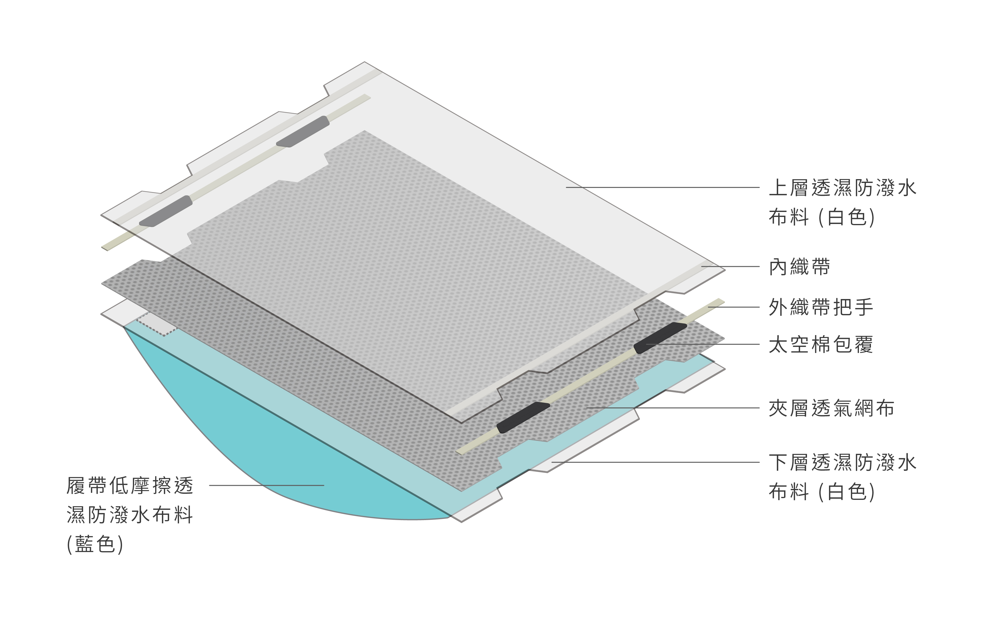

【健康】 長照需求漸增 滑動式床墊降照護負擔


截至九月底，台灣高齡人口達到約338萬人，佔人口總數14.35％，已正式邁入高齡社會，長照需求日益顯著。為了減輕照護者的負擔，國立台北科技大學通用設計研究室設計「低摩擦雙層織布之常駐型翻身擺位墊」，透過可滑動的床墊，讓照護者較容易為臥床者翻身。臥床者長時間以同姿勢接觸床面，細胞易缺氧壞死，產生褥瘡。因此在照護臥床者時，要定時為其翻身，但遇到體重較重的臥床者，對照護者而言會是一種負擔。
北科大通用設計研究室團隊欲改善照護者處境，因此使用低摩擦係數的布料，設計擺位墊。照護人員在使用此擺位墊時，須將之放置在床上，握住擺位墊的把手，就能挪動臥床者。

擺位墊分為上下兩層，下墊為摩擦係數小的布料，因此輕輕一拉，就能拉動上墊使臥床者移動。除了幫照護者省力，也考量到臥床者的舒適度，團隊使用透氣網布，讓病患不悶熱，同時顧慮照護者與臥床者需求。
此外，團隊選用不透濕與防潑水的布料，若臥床者體液沾到擺位墊，不僅清洗容易，也快乾。對此，美和科技大學護理系學生楊雅涵表示，長期臥床者較易大小便失禁，使照護者常要更換床單，「不用換床單聽起來不錯。」
此設計已進入生產、試用的階段，北科大團隊表示，團隊近期陸續聯絡醫院，提供試用產品。（本文引用自政大《大學報》）